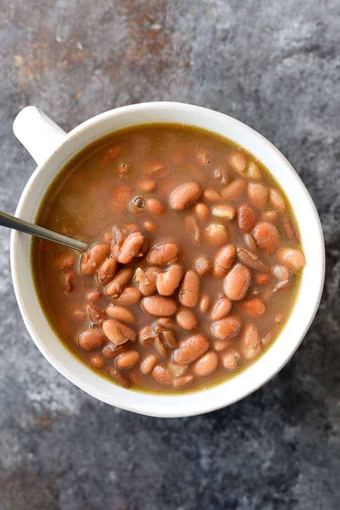

Pinto Beans

Description
Note, I borrowed this image from https://addapinch.com/pinto-bean-supper-favorite-southerisms/ until I can make my own batch and change to a much uglier picture.
Ingredients
- 1 lb of dried pinto beans (ideally soaked overnight and then drained)
- 1 large white onion
- 2 carrots
- 1 jalapeno
- 2 bay leaves
- 4 cups of vegetarian "chicken" broth
- 3 cups of water
- Several cloves of garlic (to taste)
- Cumin (to taste)
- Oregon (to taste)
- Salt (to taste)
- Pepper (to taste)
Directions
- Chop vegetables to small dice size
- (Optional) Saute carrot, onion, jalapeno until soft, add garlic and cook another couple minutes
- Combine all ingredients in a pressure cooker or crock pot
- If beans are not soaked, cook for 50 minutes in pressure cooker on high or at least 10-12 hours in crock pot on high
- If beans are soaked, cook for 25 minutes in pressure cooker on high or 8-10 hours in crock pot on high
Home